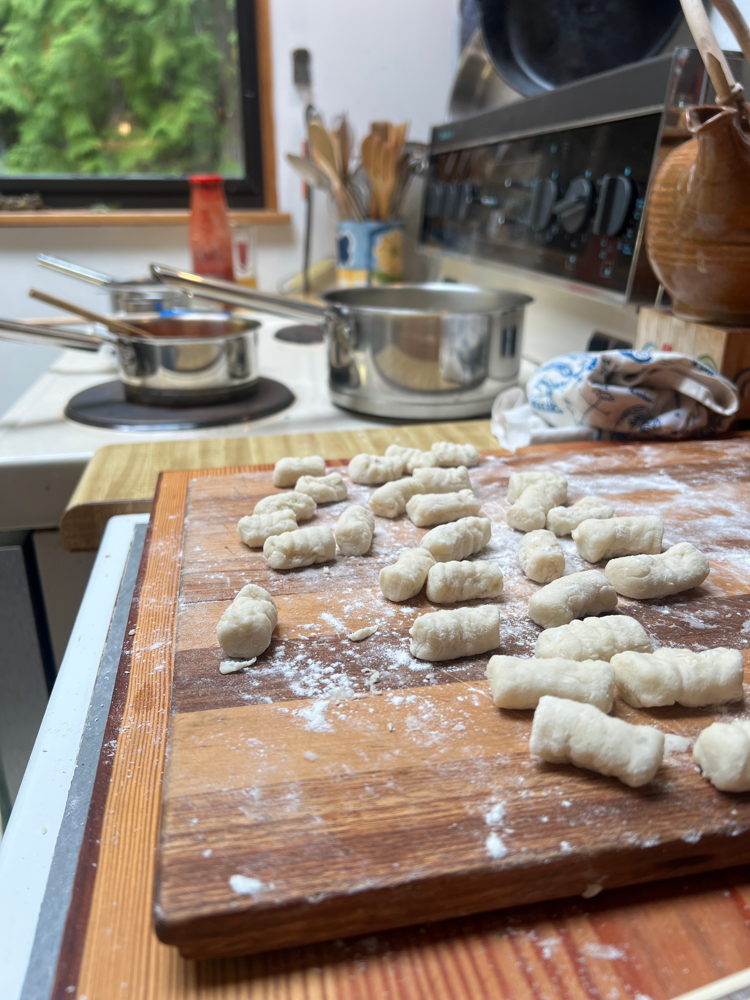

homemade gnocchi

description
a simple, vegan gnocchi recipe to make gnocchi from scratch!
this recipe only requires three ingredients
ingredients
- 2 pounds russet potatoes
- 1 1/2 - 2 cups all-purpose flour, plus more for dusting
- 1 teaspoon salt
instructions
- Peel the potatoes and cut into 1-inch chunks. Boil in salted water until very tender, about 15-20 minutes. Drain well.
- While the potatoes are still hot, pass them through a potato ricer or mash them very well with a potato
masher until no lumps remain. Spread the riced potatoes out on a clean surface to cool for 10 minutes.
- Sprinkle 1 1/2 cups of the flour and the salt over the potatoes. Use your hands to gently knead the mixture
until it comes together into a soft dough, adding a bit more flour if needed. Be careful not to overwork the dough.
- Divide the dough into 4 pieces. Roll each piece into a long rope about 3/4-inch thick. Cut the ropes into 1-inch pieces to form the gnocchi.
- If desired, roll each gnocchi over the tines of a fork to create ridges. Place the formed gnocchi on a floured baking sheet.
- Bring a large pot of salted water to a boil. Working in batches, boil the gnocchi until they float to the surface,
about 2-3 minutes. Remove with a slotted spoon.
- Serve the gnocchi immediately with your favorite sauce. Enjoy!